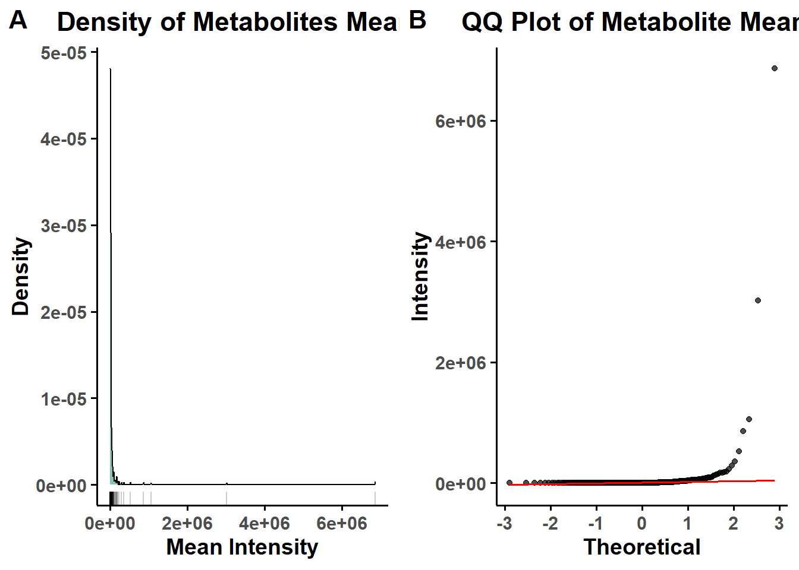
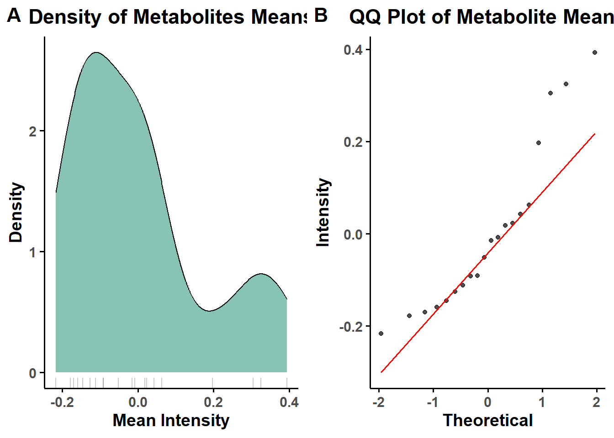

Section 3 Metaboanalyst Pipeline
Description: This pipeline performs a complete statistical workflow for preprocessing and differential analysis of metabolomics data using MetaboAnalystR package.
Project Initialization
mypath= "C:/Users/USER/Documents/Github/CRC_project/"
dir.create("output")
dir.create("plots")
dir.create("input")#Load libraries
library(tibble)
library(plyr)
library(dplyr)
library(tidyverse)
library(openxlsx)
library(cowplot)
library(ggplot2)
library("MetaboAnalystR")
#load data
data= read.csv(paste0(mypath, "input/data_for_downstream.csv"))
data = data |> column_to_rownames(colnames(data)[1]) 3.1 Normality Assessment
A custom check_normality() function evaluates the distribution of metabolite intensities before and after normalization using: Shapiro-Wilk test on sample means & Density and QQ plots for visual inspection.
# check normality of the data
check_normality <- function(data, output_dir = paste0(mypath, "plots/"), prefix = "before_norm") {
if (!dir.exists(output_dir)) dir.create(output_dir, recursive = TRUE)
# Convert to numeric
data <- mutate_all(data, ~ as.numeric(as.character(.)))
# Row-wise means
row_means <- apply(data, 1, mean, na.rm = TRUE)
# Shapiro-Wilk test
shapiro_result <- shapiro.test(row_means)
message <- if (shapiro_result$p.value > 0.05) {
"Parametric"
} else {
"Non-parametric"
}
# Density Plot
df_means <- data.frame(value = row_means )
dens_plot <- ggplot(df_means, aes(x = value)) +
geom_density(fill = "#69b3a2", alpha = 0.8, color = "black", size = 0.4) +
geom_rug(alpha = 0.2) +
labs(title = "Density of Metabolites Means", x = "Mean Intensity", y = "Density") +
theme_minimal(base_size = 14) +
theme(
plot.background = element_rect(fill = "white", color = NA),
panel.background = element_rect(fill = "white", color = NA),
panel.grid = element_blank(),
axis.line = element_line(color = "black"),
axis.ticks = element_line(color = "black"),
text = element_text(face = "bold"),
plot.title = element_text(hjust = 0.5)
)
# QQ-Plot
df_means <- data.frame(value = row_means)
qq_plot <- ggplot(df_means, aes(sample = value)) +
geom_qq(linewidth = 2.5, alpha = 0.7) +
geom_qq_line(linewidth = 0.7, colour = "red") +
labs(title = "QQ Plot of Metabolite Means", x = "Theoretical", y = "Intensity") +
theme_minimal(base_size = 14) +
theme(
plot.background = element_rect(fill = "white", color = NA),
panel.background = element_rect(fill = "white", color = NA),
panel.grid = element_blank(),
axis.line = element_line(color = "black"),
axis.ticks = element_line(color = "black"),
text = element_text(face = "bold"),
plot.title = element_text(hjust = 0.5)
)
# Combine both plots side by side
combined <- plot_grid(dens_plot, qq_plot, labels = c("A", "B"), label_size = 16)
# Save combined plot
ggsave(filename = paste0(output_dir, paste0("combined_", prefix, ".png")),
plot = combined, dpi = 600, width = 14, height = 6, bg = "white")
print(message)
print(combined)
return(list(
normality = message,
shapiro_p_value = shapiro_result$p.value
))
}## [1] "Non-parametric"
3.2 MetaboAnalystR Object Initialization
- Missing value replacement, Data sanity checks, Automatic normalization
- Summary plots for metabolite and sample normalization
# adjust the input format for metaboanalyst
group_dist= gsub("_.*", "", colnames(data))
print(group_dist)## [1] "CRC" "CRC" "CRC" "CRC" "CRC" "CRC" "CRC" "CRC" "CRC" "CRC"
## [11] "Ctrl" "Ctrl" "Ctrl" "Ctrl" "Ctrl" "Ctrl" "Ctrl" "Ctrl" "Ctrl" "Ctrl"3.3 Auto-scaleing (z-score Normalization)
#' ## setwd("New folder/")
mSet<-InitDataObjects("pktable", "stat", FALSE)
mSet<-Read.TextData(mSet, paste0(mypath,"output/for_metaboanalyst.csv"), "colu", "disc")
mSet<-SanityCheckData(mSet)## [1] "Successfully passed sanity check!"
## [2] "Samples are not paired."
## [3] "2 groups were detected in samples."
## [4] "Only English letters, numbers, underscore, hyphen and forward slash (/) are allowed."
## [5] "<font color=\"orange\">Other special characters or punctuations (if any) will be stripped off.</font>"
## [6] "All data values are numeric."
## [7] "A total of 0 (0%) missing values were detected."
## [8] "<u>By default, missing values will be replaced by 1/5 of min positive values of their corresponding variables</u>"
## [9] "Click the <b>Proceed</b> button if you accept the default practice;"
## [10] "Or click the <b>Missing Values</b> button to use other methods."mSet<-ReplaceMin(mSet)
mSet<-PreparePrenormData(mSet)
mSet<-Normalization(mSet, "NULL", "NULL", "AutoNorm", ratio=FALSE)
mSet<-PlotNormSummary(mSet, paste0(mypath,"plots/metabolites_norm"), "png", 600, width=NA)
mSet<-PlotSampleNormSummary(mSet, paste0(mypath,"plots/sample_norm"), "png", 600, width=NA)3.4 Post-Normalization Normality Check
#normality check after normalization
X <- mSet$dataSet$norm
after_norm= check_normality(X, prefix = "after_norm")## [1] "Non-parametric"
3.6 Differential Expression Analysis
#Differential expression
if(after_norm$normality== "Non-parametric"){
mSet<-Ttests.Anal(mSet, nonpar = T, 0.05, FALSE, TRUE, "fdr", all_results = TRUE)
}else{
mSet<-Ttests.Anal(mSet, nonpar = F, 0.05, FALSE, TRUE, "fdr", all_results = TRUE)
}## [1] "Performing regular t-tests ...."
## [1] "A total of 134 significant features were found."tt.sig= mSet$analSet$tt$sig.mat |> as.data.frame()
fc.sig= fc_df[ match( row.names(tt.sig), row.names(fc_df)) , ]
sig_df= cbind(tt.sig, fc.sig )
tt.all= data.frame(
abs.t.score= mSet[["analSet"]][["tt"]][["t.score"]],
p.value= mSet[["analSet"]][["tt"]][["p.value"]],
FDR = p.adjust(mSet[["analSet"]][["tt"]][["p.value"]], method = "BH") # Benjamini-Hochberg
)
fc.all= fc_df[ match( row.names(tt.all), row.names(fc_df)) , ]
all_df= cbind(tt.all, fc.all )
print ("DE is Done!")## [1] "DE is Done!"Export Results
#Export
write.csv(sig_df , paste0(mypath, "output/DE_sig.csv") , row.names = TRUE)
write.csv(all_df , paste0(mypath,"output/DE_all.csv") , row.names = TRUE)## R version 4.4.1 (2024-06-14 ucrt)
## Platform: x86_64-w64-mingw32/x64
## Running under: Windows 10 x64 (build 19045)
##
## Matrix products: default
##
##
## locale:
## [1] LC_COLLATE=English_United States.utf8
## [2] LC_CTYPE=English_United States.utf8
## [3] LC_MONETARY=English_United States.utf8
## [4] LC_NUMERIC=C
## [5] LC_TIME=English_United States.utf8
##
## time zone: Africa/Cairo
## tzcode source: internal
##
## attached base packages:
## [1] stats graphics grDevices utils datasets methods base
##
## other attached packages:
## [1] memoise_2.0.1 caret_6.0-94 lattice_0.22-6
## [4] pls_2.8-3 Rserve_1.8-13 MetaboAnalystR_3.2.0
## [7] cowplot_1.1.3 DT_0.33 openxlsx_4.2.6.1
## [10] lubridate_1.9.3 forcats_1.0.0 stringr_1.5.1
## [13] purrr_1.0.2 readr_2.1.5 tidyr_1.3.1
## [16] ggplot2_3.5.1 tidyverse_2.0.0 dplyr_1.1.4
## [19] plyr_1.8.9 tibble_3.2.1
##
## loaded via a namespace (and not attached):
## [1] RColorBrewer_1.1-3 rstudioapi_0.16.0 jsonlite_1.8.8
## [4] magrittr_2.0.3 farver_2.1.2 rmarkdown_2.27
## [7] ragg_1.3.2 vctrs_0.6.5 multtest_2.61.0
## [10] Cairo_1.6-2 htmltools_0.5.8.1 pROC_1.18.5
## [13] sass_0.4.9 parallelly_1.38.0 KernSmooth_2.23-24
## [16] bslib_0.8.0 htmlwidgets_1.6.4 impute_1.79.0
## [19] plotly_4.10.4 cachem_1.1.0 igraph_2.0.3
## [22] lifecycle_1.0.4 iterators_1.0.14 pkgconfig_2.0.3
## [25] Matrix_1.7-0 R6_2.5.1 fastmap_1.2.0
## [28] future_1.33.2 digest_0.6.36 pcaMethods_1.97.0
## [31] colorspace_2.1-1 siggenes_1.79.0 textshaping_0.4.0
## [34] crosstalk_1.2.1 ellipse_0.5.0 RSQLite_2.3.7
## [37] labeling_0.4.3 timechange_0.3.0 httr_1.4.7
## [40] compiler_4.4.1 proxy_0.4-27 bit64_4.0.5
## [43] withr_3.0.0 glasso_1.11 BiocParallel_1.39.0
## [46] DBI_1.2.3 qs_0.26.3 highr_0.11
## [49] gplots_3.1.3.1 MASS_7.3-60.2 lava_1.8.0
## [52] gtools_3.9.5 caTools_1.18.2 ModelMetrics_1.2.2.2
## [55] tools_4.4.1 zip_2.3.1 future.apply_1.11.2
## [58] nnet_7.3-19 glue_1.7.0 nlme_3.1-164
## [61] grid_4.4.1 reshape2_1.4.4 fgsea_1.31.0
## [64] generics_0.1.3 recipes_1.1.0 gtable_0.3.5
## [67] tzdb_0.4.0 class_7.3-22 data.table_1.15.4
## [70] RApiSerialize_0.1.3 hms_1.1.3 stringfish_0.16.0
## [73] BiocGenerics_0.52.0 foreach_1.5.2 pillar_1.11.0
## [76] limma_3.61.5 splines_4.4.1 survival_3.6-4
## [79] bit_4.0.5 tidyselect_1.2.1 locfit_1.5-9.10
## [82] knitr_1.48 bookdown_0.40 edgeR_4.3.5
## [85] stats4_4.4.1 xfun_0.46 Biobase_2.64.0
## [88] scrime_1.3.5 statmod_1.5.0 hardhat_1.4.0
## [91] timeDate_4032.109 stringi_1.8.4 lazyeval_0.2.2
## [94] yaml_2.3.10 evaluate_0.24.0 codetools_0.2-20
## [97] crmn_0.0.21 cli_3.6.3 RcppParallel_5.1.8
## [100] rpart_4.1.23 systemfonts_1.2.3 munsell_0.5.1
## [103] jquerylib_0.1.4 Rcpp_1.0.13 globals_0.16.3
## [106] parallel_4.4.1 gower_1.0.1 blob_1.2.4
## [109] bitops_1.0-7 listenv_0.9.1 viridisLite_0.4.2
## [112] ipred_0.9-15 e1071_1.7-14 scales_1.3.0
## [115] prodlim_2024.06.25 rlang_1.1.4 fastmatch_1.1-4